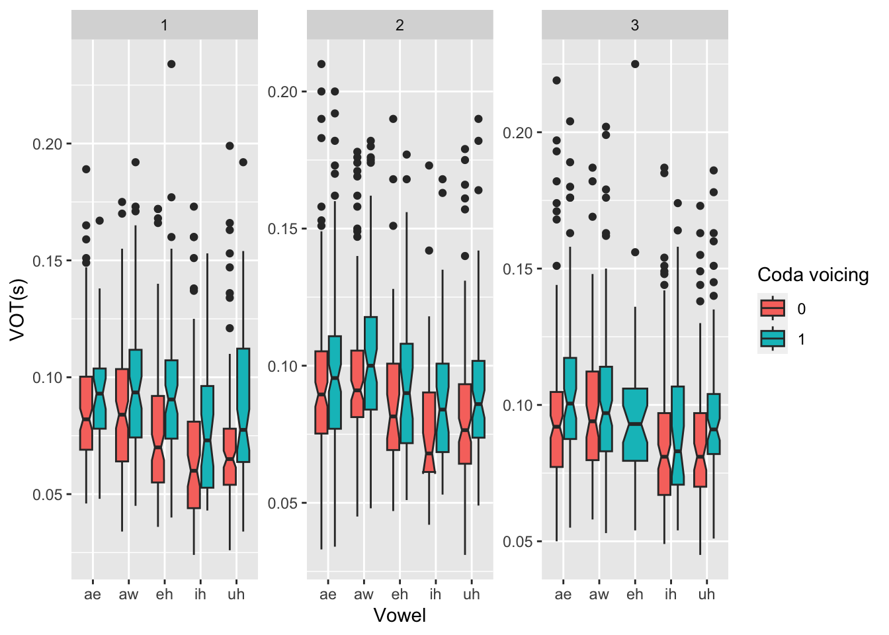

Data analysis
Preliminary plotting
By Onset POA
This is just a first pass at looking at the data so far.
data <- read.csv("/Users/chandannarayan/GitHub/Burst_voice/Data/data_03-02-24.csv", header=TRUE)
data$coda_vc <- as.character(data$coda_vc) #change class of coda_vc
data$ons_poa <- as.character(data$ons_poa) #change class of ons_poa
library(ggplot2)
plot <- ggplot(data, aes(x = ons_poa,y = vot, fill = coda_vc)) + geom_boxplot(outlier.shape = NA) + ylim(0, 0.15) + facet_wrap(~ons_poa, scale = "free") +
stat_summary(fun = median,geom = "text",aes(label = paste("Median:", round(..y.., 3))), # Label with median values
vjust = -0.5, # Vertical position of the text (adjust as needed)
position = position_dodge(width = 0.75), # Dodge the text for better visibility
show.legend = FALSE # Do not show in legend
)
plot## Warning: The dot-dot notation (`..y..`) was deprecated in ggplot2 3.4.0.
## ℹ Please use `after_stat(y)` instead.
## This warning is displayed once every 8 hours.
## Call `lifecycle::last_lifecycle_warnings()` to see where this warning was
## generated.## Warning: Removed 23 rows containing non-finite values (`stat_boxplot()`).## Warning: Removed 23 rows containing non-finite values (`stat_summary()`).
By Onset POA and Vowel
plot_vowel <- ggplot(data, aes(x = vowel,y = vot, fill = coda_vc)) + geom_boxplot(outlier.shape = NA) + facet_wrap(~ons_poa, scale = "free")
plot_vowel## Warning: Removed 7 rows containing non-finite values (`stat_boxplot()`).
It looks like there is a clear effect of coda voicing on voiceless onset VOT.
Basic models
library(lme4)## Loading required package: Matrixlibrary(tidyverse)## ── Attaching core tidyverse packages ──────────────────────── tidyverse 2.0.0 ──
## ✔ dplyr 1.1.4 ✔ readr 2.1.4
## ✔ forcats 1.0.0 ✔ stringr 1.5.0
## ✔ lubridate 1.9.3 ✔ tibble 3.2.1
## ✔ purrr 1.0.2 ✔ tidyr 1.3.0## ── Conflicts ────────────────────────────────────────── tidyverse_conflicts() ──
## ✖ tidyr::expand() masks Matrix::expand()
## ✖ dplyr::filter() masks stats::filter()
## ✖ dplyr::lag() masks stats::lag()
## ✖ tidyr::pack() masks Matrix::pack()
## ✖ tidyr::unpack() masks Matrix::unpack()
## ℹ Use the conflicted package (<http://conflicted.r-lib.org/>) to force all conflicts to become errorsdata_mod <- data %>%
#rename POA labels from 1,2,3 to p,t,k
mutate(ons_poa = recode(ons_poa, "1" = "p-", "2" = "t-", "3" = "k-"))
model <- lmer(vot ~ ons_poa * vdur + (1 | sub) + (1 | vowel), data = data_mod)
summary(model)## Linear mixed model fit by REML ['lmerMod']
## Formula: vot ~ ons_poa * vdur + (1 | sub) + (1 | vowel)
## Data: data_mod
##
## REML criterion at convergence: -8164.3
##
## Scaled residuals:
## Min 1Q Median 3Q Max
## -3.6212 -0.6212 -0.0399 0.5290 5.3772
##
## Random effects:
## Groups Name Variance Std.Dev.
## sub (Intercept) 1.607e-04 0.012679
## vowel (Intercept) 1.012e-05 0.003182
## Residual 3.083e-04 0.017560
## Number of obs: 1577, groups: sub, 13; vowel, 5
##
## Fixed effects:
## Estimate Std. Error t value
## (Intercept) 0.079659 0.004629 17.210
## ons_poap- -0.024090 0.003335 -7.222
## ons_poat- -0.008183 0.003439 -2.379
## vdur 0.065187 0.019204 3.394
## ons_poap-:vdur 0.093164 0.024437 3.812
## ons_poat-:vdur 0.038397 0.024101 1.593
##
## Correlation of Fixed Effects:
## (Intr) ons_pp- ons_pt- vdur ons_pp-:
## ons_poap- -0.391
## ons_poat- -0.377 0.521
## vdur -0.545 0.623 0.608
## ons_pp-:vdr 0.352 -0.942 -0.470 -0.630
## ons_pt-:vdr 0.357 -0.493 -0.946 -0.644 0.499p <- ggplot(data_mod, aes(x=vdur, y=vot, color=coda_vc)) +
geom_point(outlier.shape = NA) +
geom_smooth(method=lm) + xlab("Vowel dur (ms)") + ylab("VOT (ms)")## Warning in geom_point(outlier.shape = NA): Ignoring unknown parameters:
## `outlier.shape`p + facet_wrap(~ons_poa)## `geom_smooth()` using formula = 'y ~ x'## Warning: Removed 9 rows containing non-finite values (`stat_smooth()`).## Warning: Removed 9 rows containing missing values (`geom_point()`).